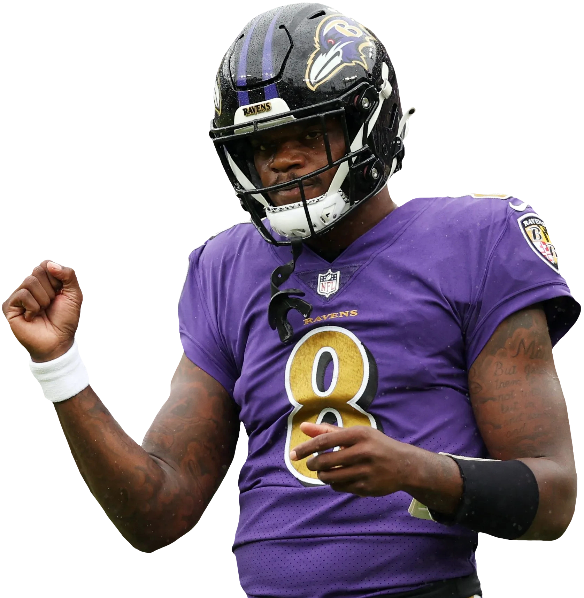

This the one and only Lamar Jackson, quarterback for the Baltimore Ravens.
PNG stands for Portable Network Graphic. PNG's support millions of colors, support multiple levels of transparency, and lastly support interlacing!
I chose this image because Lamar Jackson is an incredible quarterback and one of my all-time favorite players.